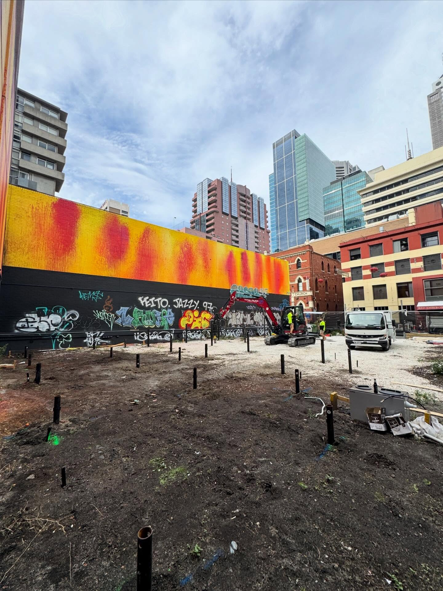

Residential pool excavations
In-ground pool digs near fences, footings, or driveways. Shoring keeps the perimeter stable while the pool shell goes in.
Excavation protection
From lightweight residential panels through to heavy commercial systems. Pool digs, basement excavations, boundary protection, and permanent retaining walls. Every system engineered to the site loads, signed off before excavation begins, certified on completion.
What it is
Any time you cut into the ground next to existing structures, fences, or boundaries, the soil wants to slump inward. Shoring is the engineered system that stops it. We supply and install the full range: lightweight residential panels for pool digs and small basements, heavier structural systems for commercial site cuts and civil excavations, sheet piling where the water table is in play, and brackets and props for tight tie-back jobs.
Shoring is temporary by design - it holds the dig open while you build, then comes out once the permanent structure (slab, basement wall, pool shell) is in place to take over. Where the design calls for a permanent retaining wall instead, the same engineering capability covers that work too. Both certified to spec, both installed by a crew that has worked across residential, commercial, and government sites for two decades.
Every system is engineered to the actual loads at the actual site - dig depth, soil profile, surrounding structures, and water table all feed in. Signed off before excavation begins, documented on completion.

The specs
From residential pool surrounds to commercial site cuts. Each system engineered to actual loads.
System range
Residential to civil
Lightweight panels through to heavy structural systems. Sheet piling, brackets, props for specialist cases.
Engagement
Hire or install
Supply panels for hire to certified operators, or full supply-and-install with engineering documentation.
Engineering
Per-site signed off
Every system engineered to dig depth, soil profile, and surrounding structures before excavation begins.
Documentation
Council-ready
Engineering plans, certificates, and sign-off documentation pack for council and government work.
Where shoring is needed
Six common scenarios. If your project sits near a boundary, a tall structure, or an excavation more than 1.5m deep, you almost certainly need shoring.
In-ground pool digs near fences, footings, or driveways. Shoring keeps the perimeter stable while the pool shell goes in.
Residential and commercial basement excavations. Engineered panels hold the perimeter back from the dig face during pour and set.
New extension footings or slab digs that get within a few metres of an existing house, driveway, or services. Protect what's already there.
Digging near a neighbour's fence, retaining wall, or footings. Boundary shoring holds their structure up while you put yours in.
Larger commercial pads, civil works, and government sites where the engineer specifies structural shoring to council standards.
Permanent installations where the design calls for a fixed retaining structure rather than temporary shoring. Engineered and certified to stay.
How a shoring job runs
Five steps. Itemised quote, sized to the dig, removed cleanly once the permanent structure takes over.
Plans, dig depth, adjacent structures, soil report. Email sales@totalpiling.com.au or call Rob direct.
Itemised quote with panel count, system type, install day, removal day, and engineering scope all on the page.
System loads calculated against the dig depth and surrounding structures. Engineering documentation pack prepared for council where required.
Panels and supports installed before the dig begins. Hire-only orders delivered to the certified operator on site.
Once the permanent structure is in and load-bearing, the shoring system is dismantled and removed. Permanent retaining installations get a completion certificate instead.
Common questions
Shoring is temporary - it holds the soil back while you dig and build, then gets removed once the permanent structure (slab, basement walls, pool shell) takes over. A retaining wall is permanent - it stays in the ground forever, holding back a change in ground level. We supply and install both, and on some sites the shoring becomes part of the permanent retaining structure.
Almost always for in-ground pools, and definitely if the dig is anywhere near a fence, footing, driveway, or neighbouring structure. Pool excavations are deep and the surrounding soil wants to collapse inward, especially in sand or wet clay. Shoring keeps the dig open safely while the pool shell goes in. Builders and pool installers usually scope this in - if yours hasn't, ask.
Both are options. Hire-only suits experienced civil contractors who have certified operators and know how to install to engineering. Supply-and-install suits builders, owner-builders, and anyone who wants the full safety and certification chain handled by one provider. Each system is engineered to the site loads either way.
When you dig close to a boundary, the soil under the neighbour's fence, driveway, or footings can slump into your excavation. Shoring panels driven or set along the boundary hold the soil in place during the dig, eliminating that risk. For government and council work, the engineering documentation and load certificate are typically required for sign-off.
It depends on the dig depth, the proximity to boundaries and existing structures, and the soil profile. Most metropolitan councils require an engineering-signed shoring plan for any excavation more than 1.5 metres deep or any excavation near a boundary. For commercial and civil work, shoring is almost always specified by the design engineer. We supply the documentation pack required for sign-off.
Got a dig coming up
Send the plans, dig depth, and any photos of the adjacent structures. We'll size the system, quote it, and book the engineering.